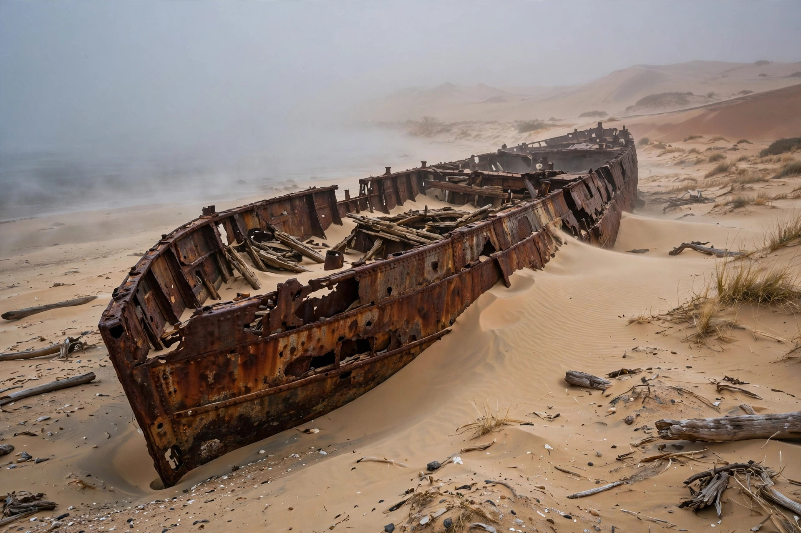

| Location | Erongo & Kunene Regions, Namibia |
|---|---|
| Length | c. 500 km (310 mi) |
| From | Kunene River (north) |
| To | Swakopmund (south) |
The Skeleton Coast is the northern part of the Atlantic coast of Namibia, running roughly 500 km from the Kunene River in the north to Swakopmund in the south, where the Namib Desert meets the ocean. It is one of the most inhospitable and least visited coastlines in the world, notorious among mariners for its treacherous currents, dense fogs and shifting sandbanks.
The name derives from the whale and seal bones that once littered the shore from the whaling industry, and especially from the many shipwrecks found along the coast — the skeletons of ships (and, in earlier times, of unfortunate sailors). Portuguese explorers reportedly called it as portas do inferno, "the Gates of Hell", while the San people called it "the land God made in anger". Notable wrecks include the Eduard Bohlen (1909), which now lies some distance inland as the shoreline has shifted, and the Dunedin Star, wrecked in 1942 in an episode involving dramatic rescue attempts by sea and land.
The cold Benguela Current flows northward along the coast, cooling the air above it and producing the dense fogs that roll inland over the desert, while heavy surf and strong cross-currents made landing dangerous for sailing ships. Rainfall is extremely low, and much of the moisture for the coastal ecosystem arrives as fog. Ephemeral rivers such as the Hoanib, Hoarusib and Uniab cut canyons through the desert to the sea.
Despite its barren appearance, the coast supports desert-adapted wildlife including lions, elephants, black rhinoceros, gemsbok, springbok, brown hyenas and large Cape fur seal colonies, notably at Cape Cross. The northern section forms part of the Skeleton Coast National Park, proclaimed in 1971, which restricts access to protect the fragile environment; much of the park is accessible only by fly-in safari.